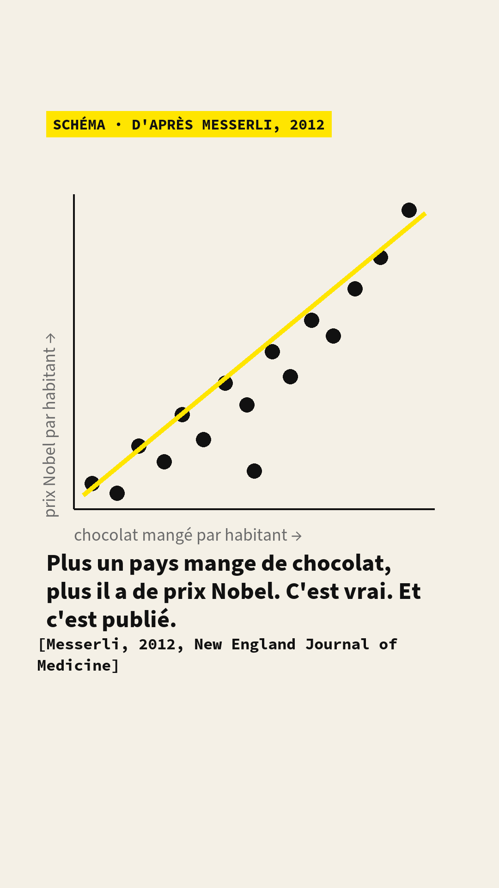
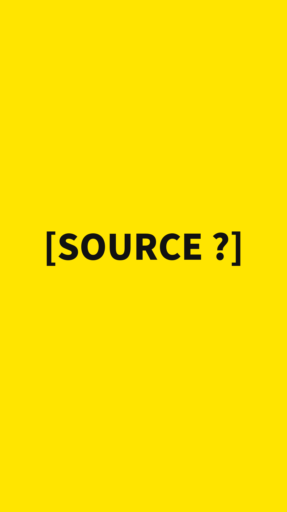
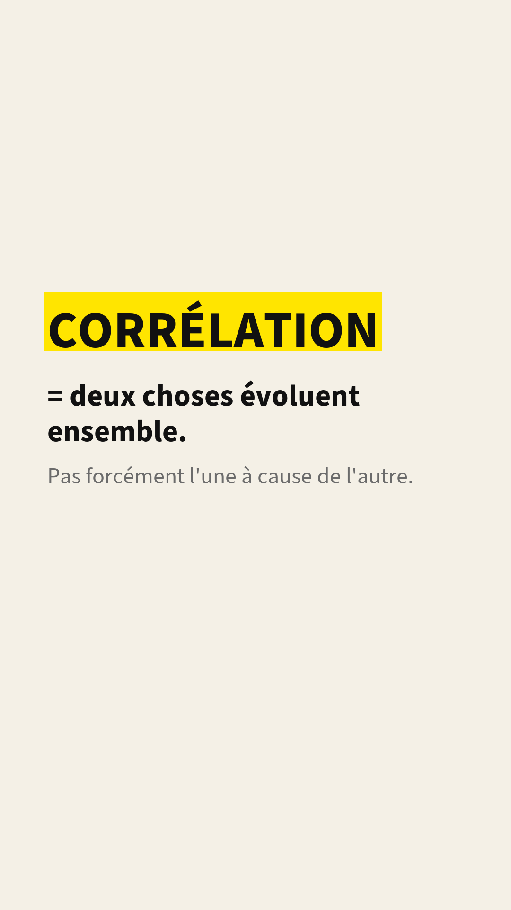
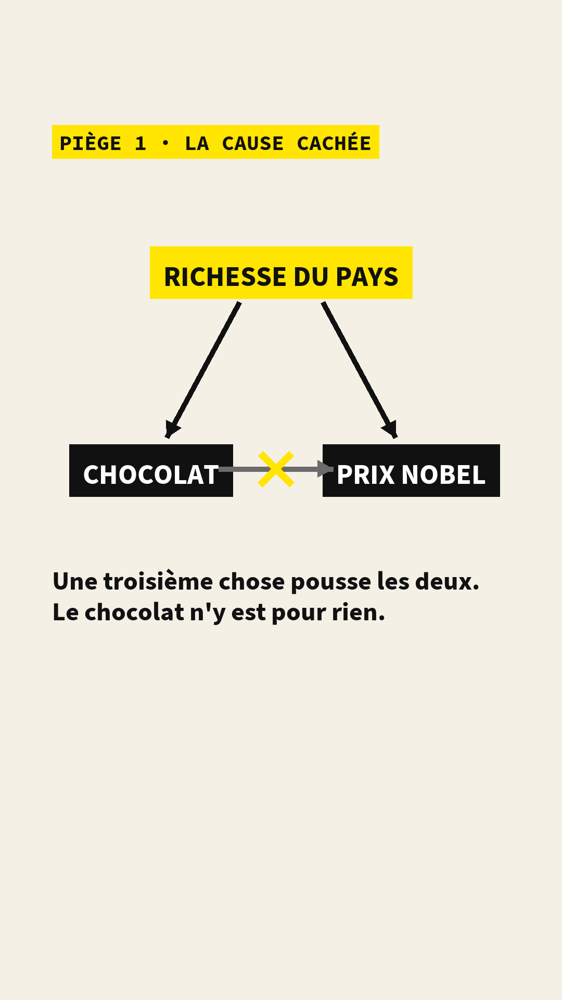
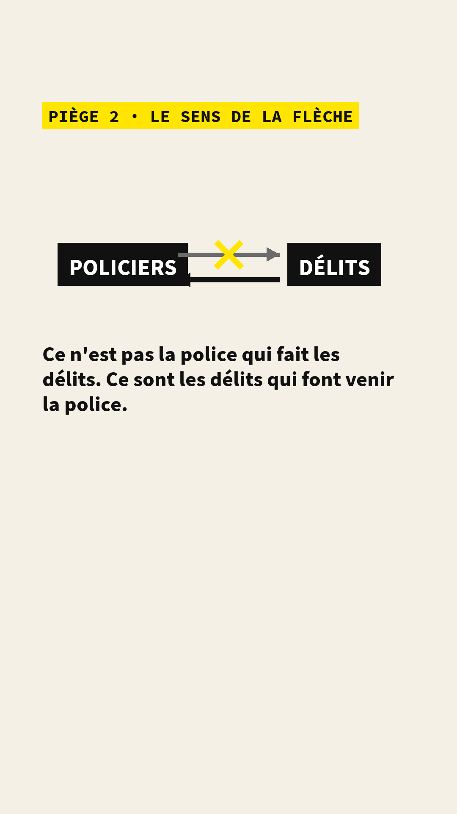
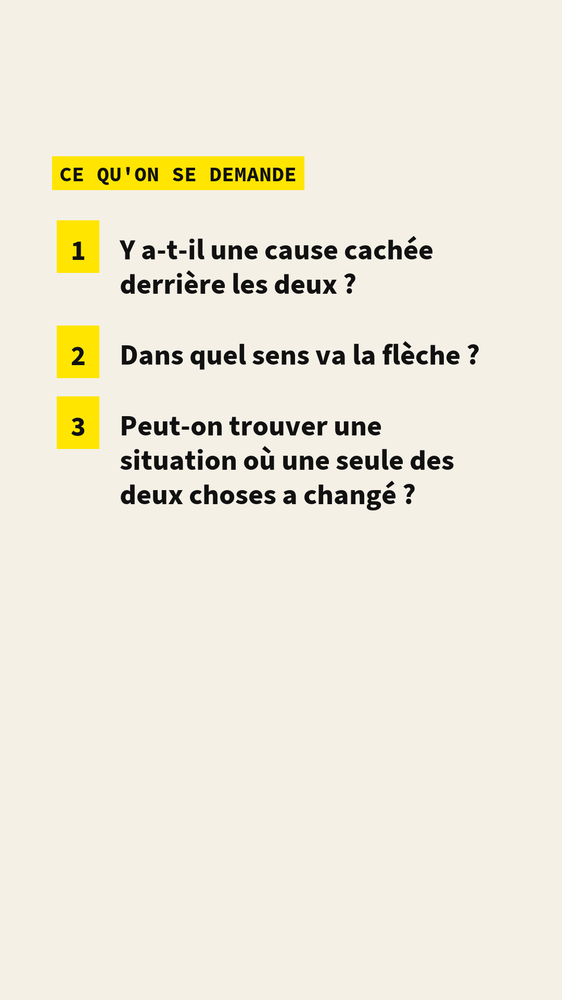
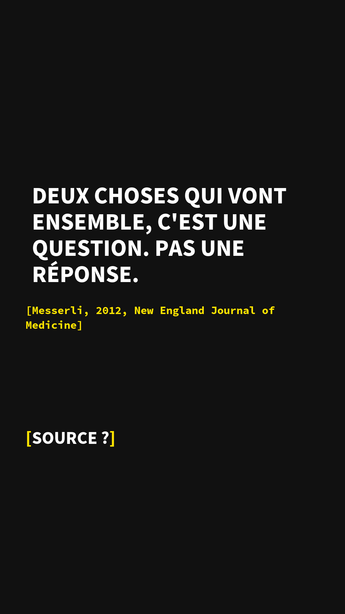

pilote
Cette vidéo sert à tester le format long et les schémas. Elle n'est pas publiée sur les réseaux. Les chiffres marqués à vérifier viennent d'une première lecture et sont en cours de vérification à la source.
1En une phrase
| La question | Quand deux choses évoluent ensemble, comment sait-on si l'une provoque l'autre ? |
|---|---|
| La réponse | On ne le sait pas d'emblée. Deux pièges : la cause cachée et le sens de la flèche. La recherche a trois questions pour les contourner. |
| Avec | Hanna Bony · économiste |
| Source principale | Messerli, 2012, New England Journal of Medicine |
| La limite | La vidéo ne dit pas comment on tranche : c'est l'épisode suivant, sur le tirage au sort. |
| Thème | Comprendre les chiffres · Les bases, épisode 1 |
| Notion | Corrélation et causalité |
2L'explication, en images
Les pays qui mangent le plus de chocolat ont le plus de prix Nobel. C'est vrai, et c'est publié dans une grande revue de médecine. Ça ne veut pas dire que le chocolat rend brillant. Voilà pourquoi, en trois schémas.
Quand deux choses évoluent ensemble, les chercheurs parlent de corrélation. Presque tout ce qui circule sur Internet a cette forme : « les gens qui font ceci ont plus de cela ». La question, c'est de savoir si l'une des deux provoque l'autre. Deux pièges rendent la réponse difficile.
Pour avancer, la recherche se pose trois questions. Y a-t-il une cause cachée derrière les deux ? Dans quel sens va la flèche ? Et surtout : peut-on trouver une situation où une seule des deux choses a changé, et rien d'autre ? C'est tout le travail, et c'est souvent le plus dur. Comment on tranche, avec un tirage au sort, c'est l'objet de l'épisode suivant.
3La transcription
Le texte dit dans la vidéo, mot pour mot, avec le moment et ce qui est à l'écran.
Les pays qui mangent le plus de chocolat ont le plus de prix Nobel. C'est vrai. Et c'est publié dans une des plus grandes revues de médecine du monde.
(son du carton)
Je suis économiste, et je passe mes journées sur une seule question : quand deux choses vont ensemble, est-ce que l'une provoque l'autre ? Les chercheurs appellent ça une corrélation. En clair : deux choses évoluent ensemble. Plus de chocolat, plus de Nobel. Et presque tout ce qui circule sur Internet a cette forme : les gens qui font ceci ont plus de cela.
Premier piège : la cause cachée. Qu'est-ce qui fait qu'un pays mange beaucoup de chocolat ? Il est riche. Et qu'est-ce qui fait qu'un pays a des prix Nobel ? Il est riche : il paie des laboratoires, des universités. La richesse pousse les deux. Le chocolat n'y est pour rien. Le médecin qui a publié cette étude le savait très bien : c'était une blague, pour expliquer exactement ça.
Deuxième piège : le sens de la flèche. Les villes qui ont le plus de policiers sont celles qui ont le plus de délits. Donc la police crée la délinquance ? Non. C'est l'inverse : là où il y a des délits, on envoie des policiers. Les deux choses vont ensemble, mais la flèche va dans l'autre sens.
Alors comment on fait, en recherche ? On se pose trois questions. Est-ce qu'il y a une cause cachée derrière les deux ? Dans quel sens va la flèche ? Et surtout : est-ce qu'on peut trouver une situation où une seule des deux choses a changé, et rien d'autre ? C'est ça, tout le travail. Et c'est souvent le plus dur.
Ce qui m'a le plus surprise quand j'ai commencé, ce n'est pas que les gens se trompent. C'est que notre cerveau adore les flèches. Dès que deux choses vont ensemble, on en dessine une.
Deux choses qui vont ensemble, c'est une question. Pas une réponse. La prochaine fois : comment on tranche. Avec un tirage au sort.
La légende publiée avec la vidéo. Quand deux choses évoluent ensemble, est-ce que l'une cause l'autre ? Pas forcément : il peut y avoir une cause cachée, ou la flèche peut aller dans l'autre sens. Avec : Hanna Bony, économiste. Source : Messerli, 2012, NEJM, lien.
4Ce qu'elle montre, ce qu'elle ne montre pas
- Que deux choses qui évoluent ensemble ne suffisent pas à dire que l'une provoque l'autre.
- Deux raisons précises pour lesquelles on peut se tromper : une cause cachée qui pousse les deux, ou une flèche qui va dans l'autre sens.
- Les trois questions que la recherche se pose avant de parler de cause.
- Comment on tranche : c'est l'objet de l'épisode suivant, sur le tirage au sort et le contrefactuel.
- Que la corrélation chocolat-Nobel serait fausse : elle existe, et l'auteur de l'article la présente lui-même comme une illustration.
- Un chiffre sur les policiers et les délits : cet exemple est une illustration, sans source à l'écran, et la voix ne cite aucun chiffre.
5Les sources
Les articles cités, avec le lien vers le document d'origine.
- Messerli F. H., « Chocolate Consumption, Cognitive Function, and Nobel Laureates », New England Journal of Medicine, vol. 367, p. 1562-1564, 18 octobre 2012. Une note de deux pages qui compare, pour 23 pays, la consommation de chocolat par habitant et le nombre de prix Nobel par dix millions d'habitants ; l'auteur la présente lui-même comme une illustration du piège de la corrélation. Accès payant ; le résumé est libre. doi.org/10.1056/NEJMon1211064
L'écran 01 est un schéma inspiré du graphique de l'article, pas le graphique lui-même ; il est marqué « schéma » à l'écran. L'exemple des policiers et des délits est une illustration classique, sans chiffre ni source à l'écran.
6Les données et les calculs
Les bases de données utilisées
- Les données de l'article de Messerli : la consommation de chocolat par habitant vient des statistiques des industriels du chocolat (Chocosuisse, Theobroma cacao, Caobisco), et le nombre de prix Nobel par pays de la liste officielle des lauréats, consultable sur nobelprize.org. Les valeurs pays par pays sont dans le graphique de l'article. à vérifier en rouvrant l'article.
Cette vidéo ne contient aucun graphique calculé par nous : les écrans 02 à 05 sont des schémas (deux boîtes et une flèche) qui n'utilisent pas de données. Il n'y a donc pas de fichier à télécharger.
| Chiffre | Valeur | Statut |
|---|---|---|
| Corrélation entre consommation de chocolat par habitant et prix Nobel par habitant, dans l'article de Messerli (23 pays) | r = 0,79 | à vérifier ; le chiffre n'est pas dit dans la vidéo |
7Les écrans
Les images posées sur la vidéo, générées à partir de la charte graphique. Format vertical 1080 × 1920.







8Relecture et validation
| Étape | Qui | Statut |
|---|---|---|
| Écriture du script | Hanna Bony | fait |
| Relecture scientifique | à compléter | en cours |
| Relecture éditoriale | à compléter | en cours |
| Validation technique (sous-titres, habillage, sources à l'écran) | à compléter | en cours |
| Accord du chercheur sur la version montée | Hanna Bony | en cours |
9Corrections
Aucune correction pour l'instant. Une erreur ? Signalez-la.